L08 Open source intelligence (OSINT)
The task
Research open source intelligence and three of its techniques (online searching, social media analysis and domain research), then make a slide deck with speaker notes covering what it is, how it's used and the ethics.
What I made
An eleven-slide deck. For the domain research slide I ran my own lookups on psu.edu: WHOIS shows the domain was registered in 1986, and a search of public certificate logs found 2,140 hostnames on valid certificates. A security team checks a list like that for forgotten sites, because an attacker could build the same list just as easily. The last slide sets out where I used AI and lists my references.
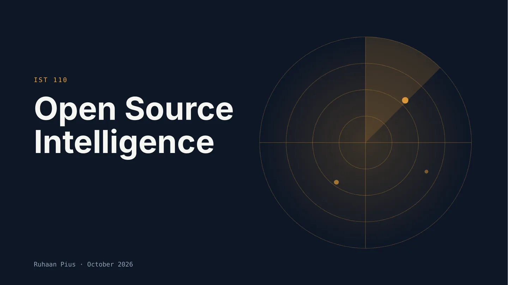
See the other 10 slides

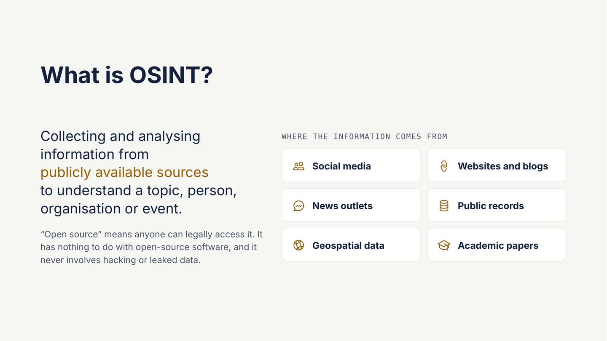

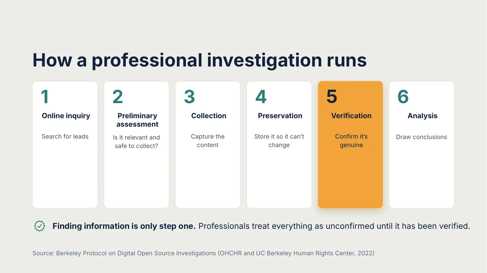

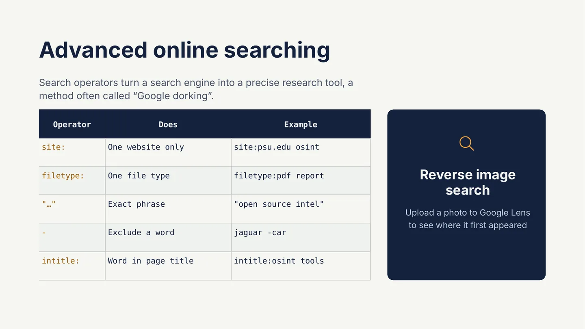

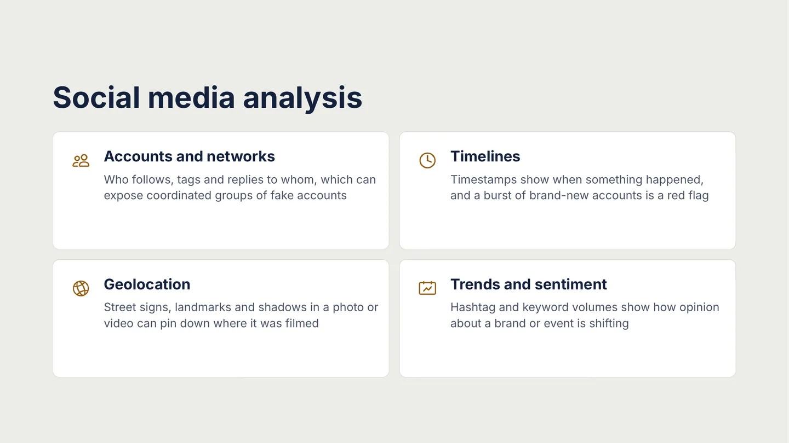

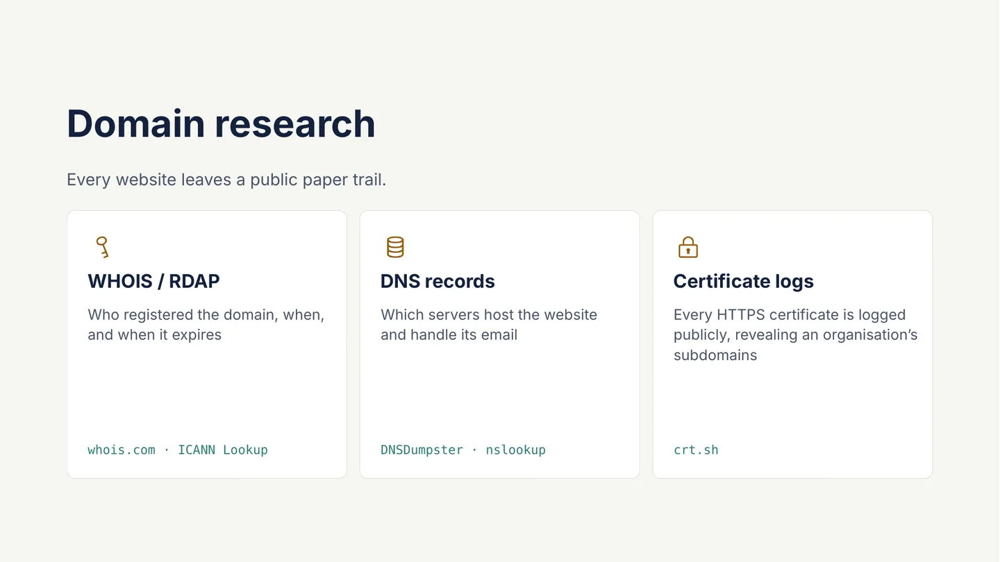

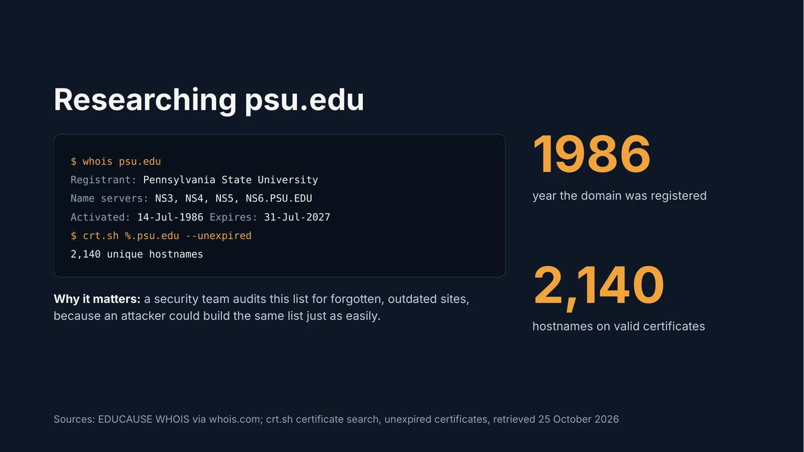

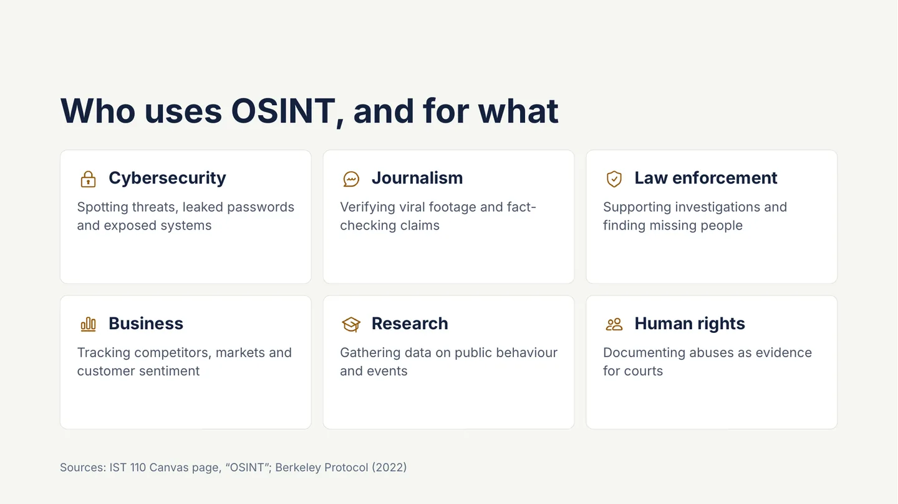

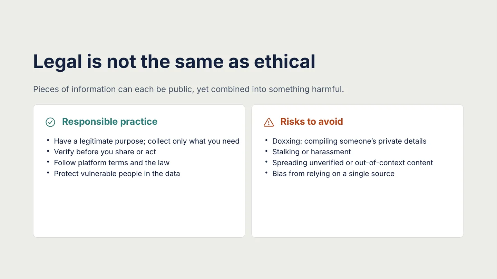

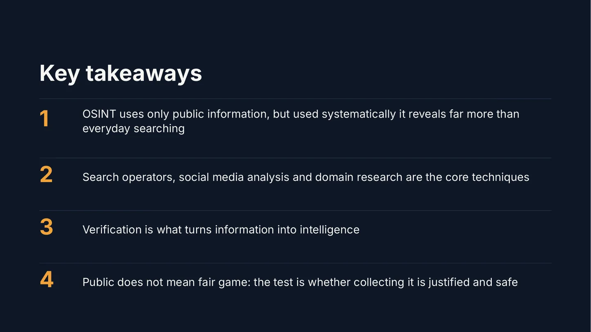

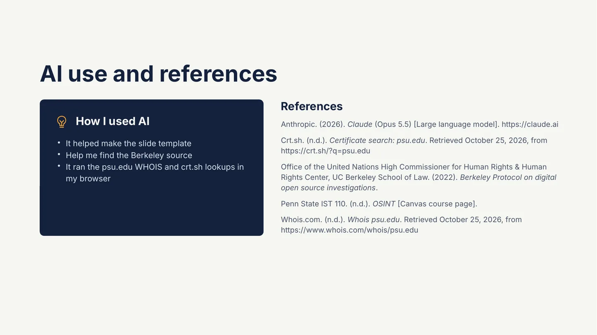
Download the original (PDF, 11 slides, 882 KB)
Reflection
Reflection in progress.